This is a vignette describing usage of mascarade to
generate masks for clusters on 2D dimensional reduction plots like UMAP
or t-SNE.
Package installation
The package stable version can be installed from CRAN:
install.packages("mascarade")The most recent development version of the package can be installed from GitHub:
remotes::install_github("alserglab/mascarade")Example run
Loading example data from PBMC 3K processed with Seurat (see below for more details).
data("exampleMascarade")UMAP coordinates:
head(exampleMascarade$dims)## UMAP_1 UMAP_2
## AAACATACAACCAC -4.232792 -4.152139
## AAACATTGAGCTAC -4.892886 10.985685
## AAACATTGATCAGC -5.508639 -7.211088
## AAACCGTGCTTCCG 11.332233 3.161727
## AAACCGTGTATGCG -7.450703 1.092022
## AAACGCACTGGTAC -3.509504 -6.087042Cluster annotations:
head(exampleMascarade$clusters)## AAACATACAACCAC AAACATTGAGCTAC AAACATTGATCAGC AAACCGTGCTTCCG AAACCGTGTATGCG
## Memory CD4 T B Memory CD4 T CD14+ Mono NK
## AAACGCACTGGTAC
## Memory CD4 T
## 9 Levels: Naive CD4 T Memory CD4 T CD14+ Mono B CD8 T FCGR3A+ Mono NK ... PlateletExpression table for several genes:
head(exampleMascarade$features)## MS4A1 GNLY CD3E CD14 FCER1A FCGR3A
## AAACATACAACCAC -0.4110536 -0.4081782 1.0157094 -0.393789 -0.1373491 -0.4507969
## AAACATTGAGCTAC 2.5965712 -0.4081782 -0.9189074 -0.393789 -0.1373491 -0.4507969
## AAACATTGATCAGC -0.4110536 0.7526607 0.8148764 -0.393789 -0.1373491 -0.4507969
## AAACCGTGCTTCCG -0.4110536 -0.4081782 -0.9189074 -0.393789 -0.1373491 1.1300704
## AAACCGTGTATGCG -0.4110536 2.3958265 -0.9189074 -0.393789 -0.1373491 -0.4507969
## AAACGCACTGGTAC -0.4110536 -0.4081782 1.1029222 -0.393789 -0.1373491 -0.4507969
## LYZ PPBP CD8A
## AAACATACAACCAC -0.11104505 -0.1416271 2.1039769
## AAACATTGAGCTAC 0.06112027 -0.1416271 -0.3537211
## AAACATTGATCAGC 0.07833934 -0.1416271 -0.3537211
## AAACCGTGCTTCCG 1.40875149 2.9255239 -0.3537211
## AAACCGTGTATGCG -0.97272094 -0.1416271 -0.3537211
## AAACGCACTGGTAC -0.06309661 -0.1416271 -0.3537211Let’s plot these data:
data <- data.table(exampleMascarade$dims,
cluster=exampleMascarade$clusters,
exampleMascarade$features)
ggplot(data, aes(x=UMAP_1, y=UMAP_2)) +
geom_point(aes(color=cluster)) +
coord_fixed() +
theme_classic()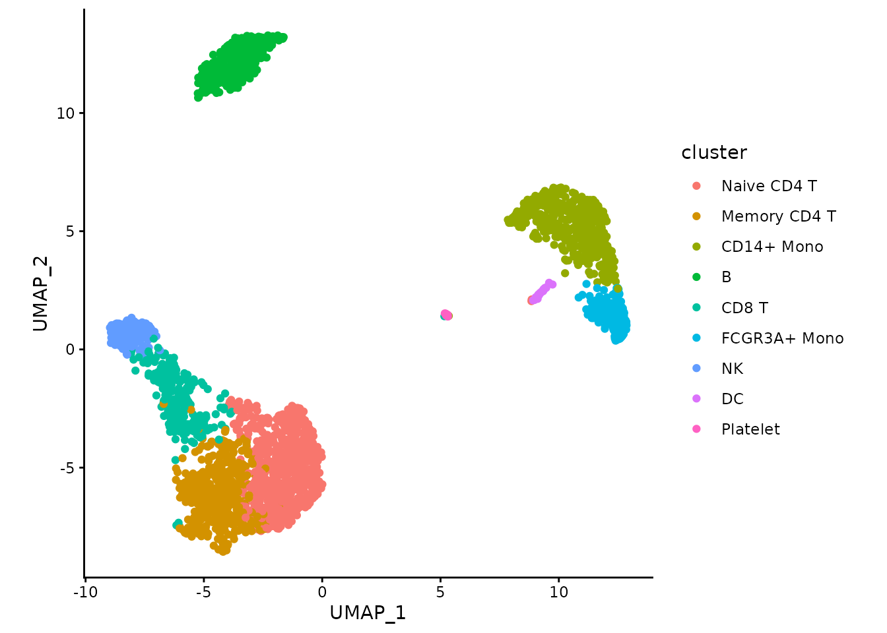
Now let’s generate cluster masks:
maskTable <- generateMask(dims=exampleMascarade$dims,
clusters=exampleMascarade$clusters)The maskTable is actually a table of cluster borders. A
single cluster can have multiple connected parts, and one a single part
can contain multiple border lines (groups).
head(maskTable)## UMAP_1 UMAP_2 part group cluster
## <num> <num> <char> <char> <fctr>
## 1: -3.980324 -9.021239 Memory CD4 T#1 Memory CD4 T#1#1 Memory CD4 T
## 2: -3.945936 -9.009776 Memory CD4 T#1 Memory CD4 T#1#1 Memory CD4 T
## 3: -3.934473 -8.998313 Memory CD4 T#1 Memory CD4 T#1#1 Memory CD4 T
## 4: -3.923011 -8.986850 Memory CD4 T#1 Memory CD4 T#1#1 Memory CD4 T
## 5: -3.911548 -8.975387 Memory CD4 T#1 Memory CD4 T#1#1 Memory CD4 T
## 6: -3.900085 -8.963925 Memory CD4 T#1 Memory CD4 T#1#1 Memory CD4 TNow we can use this table to draw the borders with
geom_path (group column should be used as the
group aesthetics):
ggplot(data, aes(x=UMAP_1, y=UMAP_2)) +
geom_point(aes(color=cluster)) +
geom_path(data=maskTable, aes(group=group)) +
coord_fixed() +
theme_classic()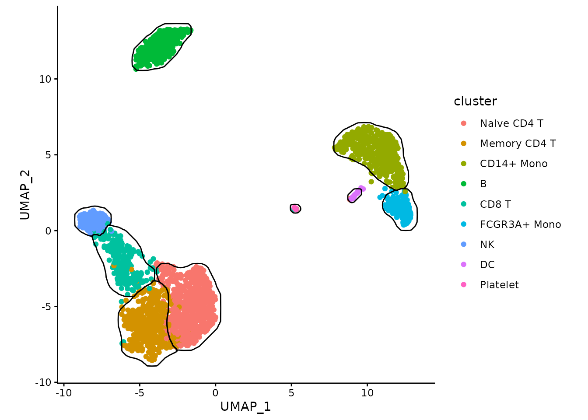
Or we can color the borders instead of points:
ggplot(data, aes(x=UMAP_1, y=UMAP_2)) +
geom_point(color="grey") +
geom_path(data=maskTable, aes(group=group, color=cluster), linewidth=1) +
coord_fixed() +
theme_classic()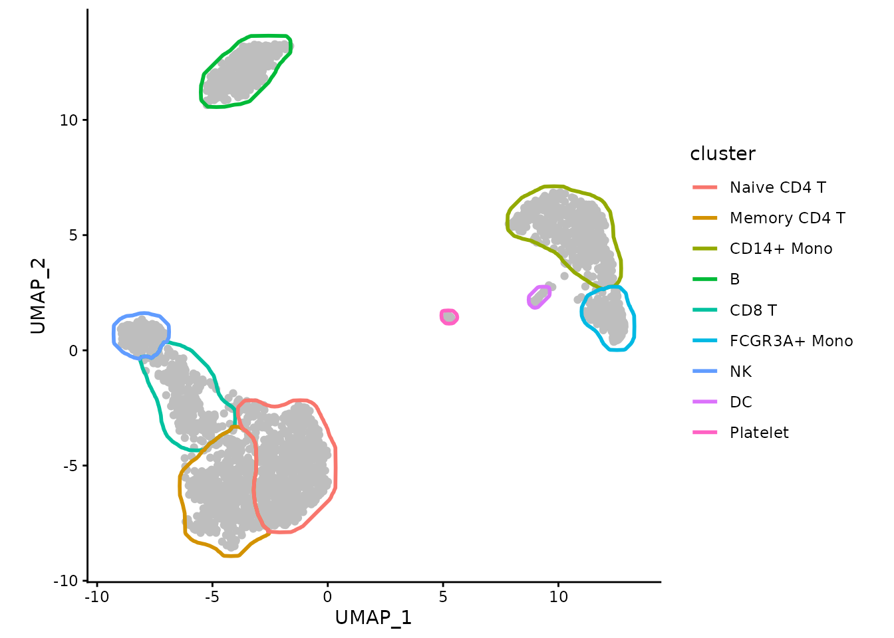
We can use ggforce package to make the borders touch
instead of overlap:
ggplot(data, aes(x=UMAP_1, y=UMAP_2)) +
geom_point(color="grey") +
ggforce::geom_shape(data=maskTable, aes(group=group, color=cluster),
linewidth=1, fill=NA, expand=unit(-1, "pt")) +
coord_fixed() +
theme_classic()
In the presence of small clusters it can help to expand the borders a bit further away from the points.
maskTable <- generateMask(dims=exampleMascarade$dims,
clusters=exampleMascarade$clusters,
expand=0.02)
ggplot(data, aes(x=UMAP_1, y=UMAP_2)) +
geom_point(color="grey") +
ggforce::geom_shape(data=maskTable, aes(group=group, color=cluster),
linewidth=1, fill=NA, expand=unit(-1, "pt")) +
coord_fixed() +
theme_classic()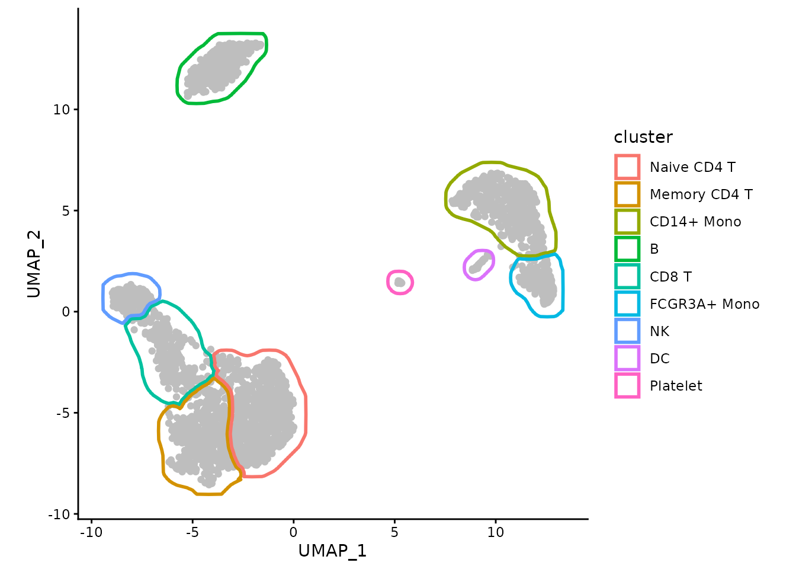
With the help of ggforce-based function
geom_mark_shape we can also put the labels within the plot
itself.
myMask <- list(
geom_mark_shape(data=maskTable, aes(group=cluster, color=cluster, label = cluster),
fill = NA,
linewidth=1, expand=unit(-1, "pt"),
con.cap=0, con.type = "straight",
label.fontsize = 10, label.buffer = unit(0, "cm"),
label.fontface = "plain",
label.minwidth = 0,
label.margin = margin(2, 2, 2, 2, "pt"),
label.lineheight = 0,
con.colour = "inherit",
show.legend = FALSE),
# expanding to give a bit more space for labels
scale_x_continuous(expand = expansion(mult = 0.1)),
scale_y_continuous(expand = expansion(mult = 0.1))
)
ggplot(data, aes(x=UMAP_1, y=UMAP_2)) +
geom_point(color="grey") +
myMask +
coord_fixed() +
theme_classic()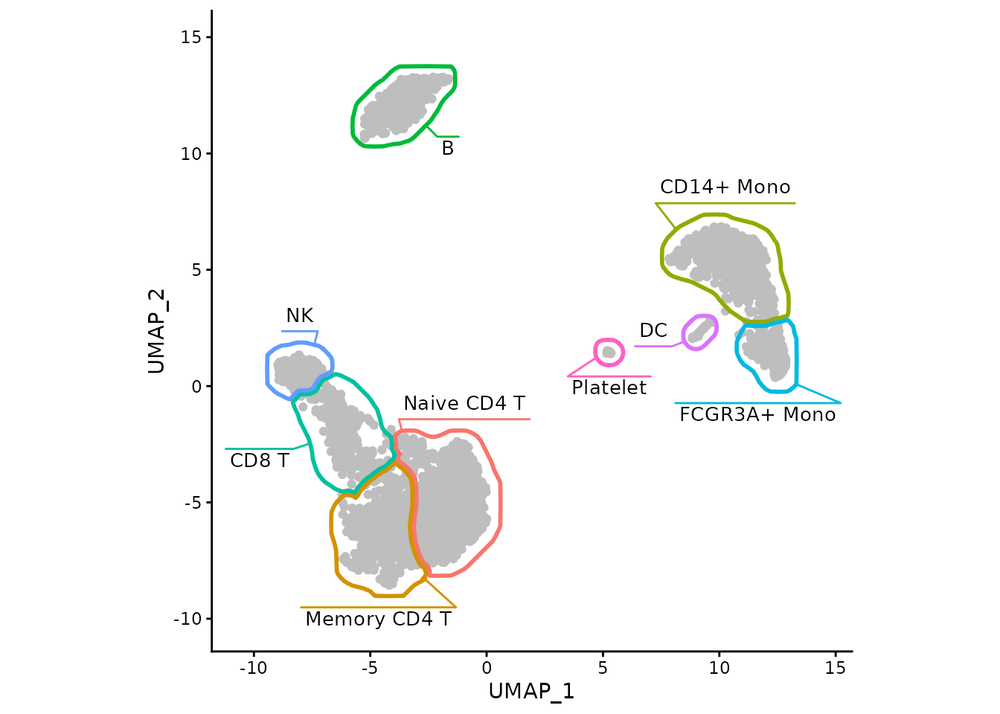
The same can be achived with the fancyMask() helper
function:
ggplot(data, aes(x=UMAP_1, y=UMAP_2)) +
geom_point(color="grey") +
fancyMask(maskTable, ratio=1) +
theme_classic()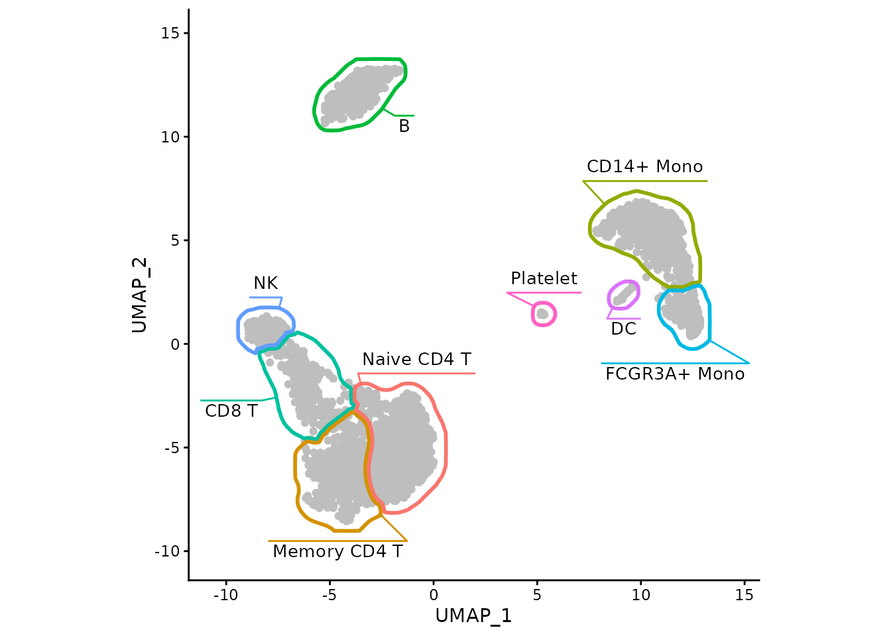
Now we can easily show association between cell types and expression of particular genes, such as GNLY being a good marker for NK cells in this dataset.
ggplot(data, aes(x=UMAP_1, y=UMAP_2)) +
geom_point(aes(color=GNLY), size=0.5) +
scale_color_gradient2(low = "#404040", high="red") +
fancyMask(maskTable, ratio=1) +
theme_classic()
We can focus on a single cluster too:
ggplot(data, aes(x=UMAP_1, y=UMAP_2)) +
geom_point(aes(color=GNLY), size=0.5) +
scale_color_gradient2(low = "#404040", high="red") +
geom_path(data=maskTable[cluster=="NK"], aes(group=group)) +
coord_fixed() +
theme_classic()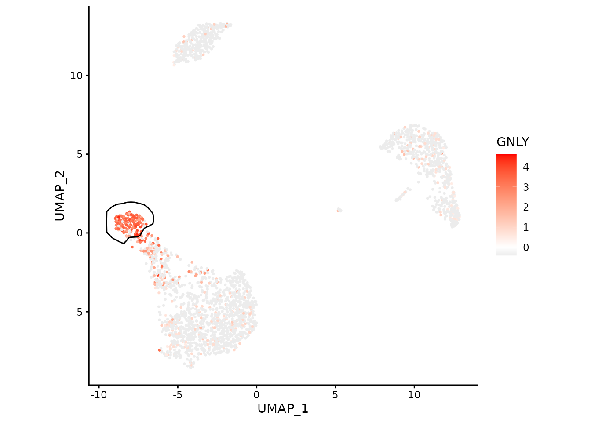
Working with Seurat
For this part of the vignette you need
Seuratpackage.
Let’s get the example PBMC3K dataset:
pbmc3k <- readRDS(url("https://alserglab.wustl.edu/files/mascarade/examples/pbmc3k_seurat5.rds"))
pbmc3k <- NormalizeData(pbmc3k)
pbmc3k## An object of class Seurat
## 13714 features across 2638 samples within 1 assay
## Active assay: RNA (13714 features, 2000 variable features)
## 2 layers present: counts, data
## 2 dimensional reductions calculated: pca, umapThe same object can be obtained using SeuratData package
(can be installed with
remotes::install_github('satijalab/seurat-data')):
if (requireNamespace("SeuratData")) {
if (!AvailableData()["pbmc3k", "Installed"]) {
InstallData("pbmc3k")
}
LoadData("pbmc3k")
pbmc3k <- UpdateSeuratObject(pbmc3k.final)
pbmc3k
}Generate masks using a helper function:
maskTable <- generateMaskSeurat(pbmc3k)We can use fancyMask() now:
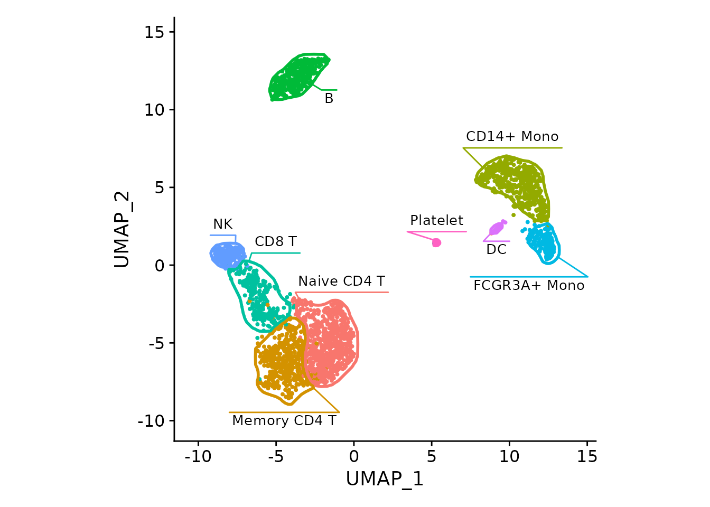
For the DimPlot, the borders can be viewed as redundant
and removed:
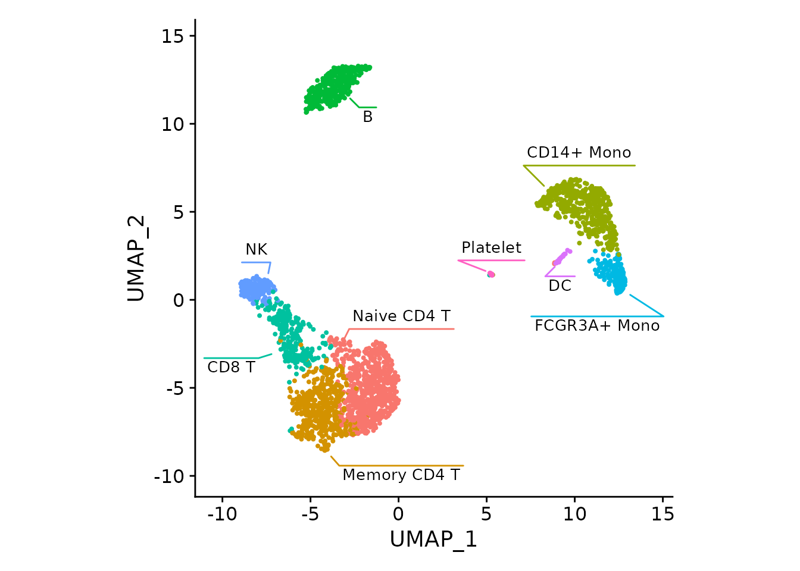
Let’s plot an NK cell marker:
FeaturePlot(pbmc3k, "GNLY", cols=c("grey90", "red")) +
fancyMask(maskTable, ratio=1)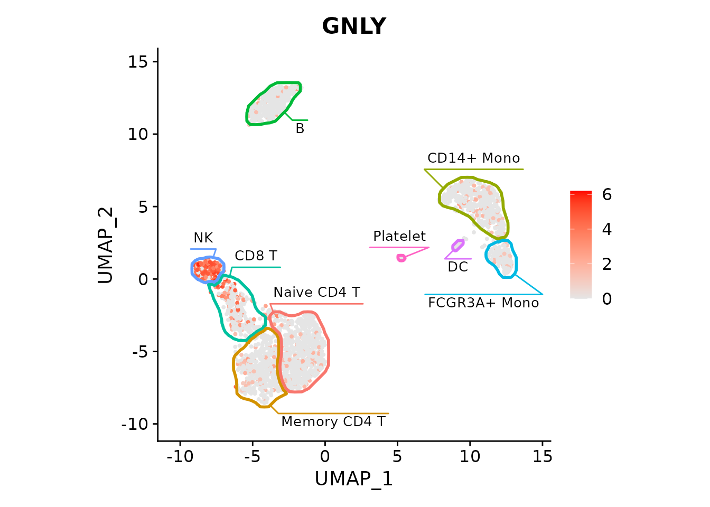
Or multiple markers (skipping the labels to save space):
featureList <- c("MS4A1", "GNLY", "CD3E", "CD14")
plots <- FeaturePlot(pbmc3k, features=featureList, cols=c("grey90", "red"), combine = FALSE)
plots <- lapply(plots, `+`, fancyMask(maskTable, ratio=1, linewidth=0.5, label=FALSE))
patchwork::wrap_plots(plots)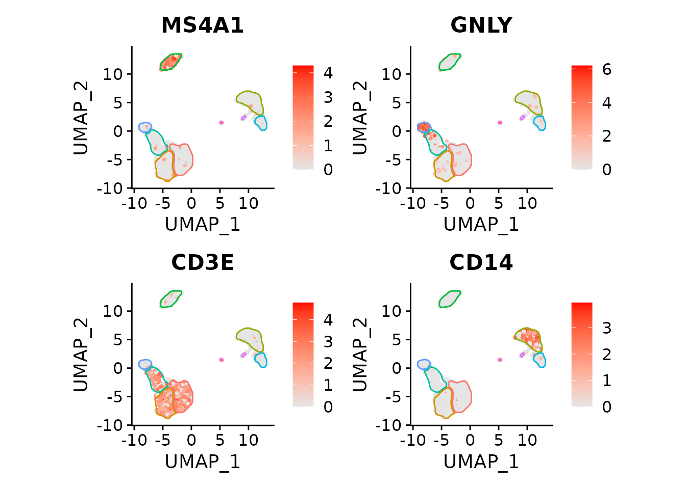
Works with t-SNE too:
pbmc3k <- RunTSNE(pbmc3k)
maskTable <- generateMaskSeurat(pbmc3k, reduction = "tsne")
plots <- FeaturePlot(pbmc3k,
features=featureList,
reduction = "tsne",
cols=c("grey90", "red"),
combine = FALSE)
plots <- lapply(plots, `+`, fancyMask(maskTable, ratio=1, linewidth=0.5, label=FALSE))
patchwork::wrap_plots(plots)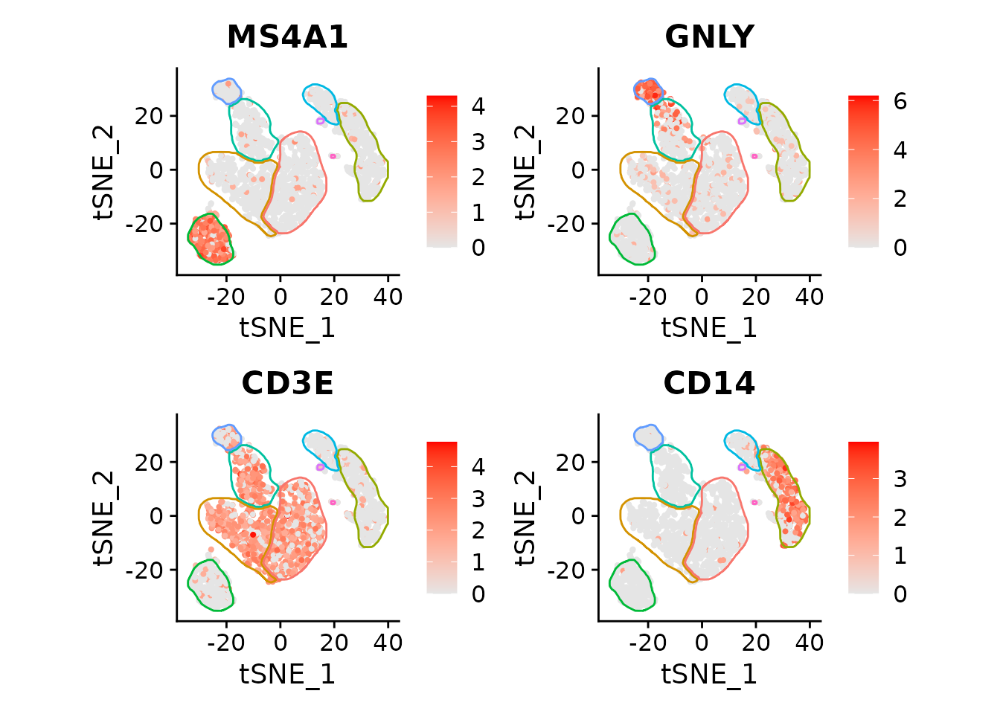
Session info
## R version 4.5.2 (2025-10-31)
## Platform: x86_64-pc-linux-gnu
## Running under: Ubuntu 24.04.3 LTS
##
## Matrix products: default
## BLAS: /usr/lib/x86_64-linux-gnu/openblas-pthread/libblas.so.3
## LAPACK: /usr/lib/x86_64-linux-gnu/openblas-pthread/libopenblasp-r0.3.26.so; LAPACK version 3.12.0
##
## locale:
## [1] LC_CTYPE=C.UTF-8 LC_NUMERIC=C LC_TIME=C.UTF-8
## [4] LC_COLLATE=C.UTF-8 LC_MONETARY=C.UTF-8 LC_MESSAGES=C.UTF-8
## [7] LC_PAPER=C.UTF-8 LC_NAME=C LC_ADDRESS=C
## [10] LC_TELEPHONE=C LC_MEASUREMENT=C.UTF-8 LC_IDENTIFICATION=C
##
## time zone: UTC
## tzcode source: system (glibc)
##
## attached base packages:
## [1] stats graphics grDevices utils datasets methods base
##
## other attached packages:
## [1] Seurat_5.4.0 SeuratObject_5.3.0 sp_2.2-0 ggforce_0.5.0
## [5] ggplot2_4.0.1 data.table_1.18.0 mascarade_0.3.0
##
## loaded via a namespace (and not attached):
## [1] pbapply_1.7-4 deldir_2.0-4 gridExtra_2.3
## [4] rlang_1.1.7 magrittr_2.0.4 RcppAnnoy_0.0.23
## [7] otel_0.2.0 matrixStats_1.5.0 ggridges_0.5.7
## [10] compiler_4.5.2 spatstat.geom_3.6-1 reshape2_1.4.5
## [13] png_0.1-8 systemfonts_1.3.1 vctrs_0.6.5
## [16] stringr_1.6.0 pkgconfig_2.0.3 fastmap_1.2.0
## [19] labeling_0.4.3 promises_1.5.0 rmarkdown_2.30
## [22] ragg_1.5.0 purrr_1.2.1 xfun_0.55
## [25] cachem_1.1.0 jsonlite_2.0.0 goftest_1.2-3
## [28] later_1.4.5 spatstat.utils_3.2-1 tweenr_2.0.3
## [31] irlba_2.3.5.1 parallel_4.5.2 cluster_2.1.8.1
## [34] R6_2.6.1 ica_1.0-3 stringi_1.8.7
## [37] bslib_0.9.0 RColorBrewer_1.1-3 spatstat.data_3.1-9
## [40] reticulate_1.44.1 parallelly_1.46.1 spatstat.univar_3.1-5
## [43] scattermore_1.2 lmtest_0.9-40 jquerylib_0.1.4
## [46] Rcpp_1.1.1 knitr_1.51 tensor_1.5.1
## [49] future.apply_1.20.1 zoo_1.8-15 sctransform_0.4.3
## [52] httpuv_1.6.16 Matrix_1.7-4 splines_4.5.2
## [55] igraph_2.2.1 tidyselect_1.2.1 abind_1.4-8
## [58] yaml_2.3.12 codetools_0.2-20 spatstat.random_3.4-3
## [61] miniUI_0.1.2 spatstat.explore_3.6-0 listenv_0.10.0
## [64] plyr_1.8.9 lattice_0.22-7 tibble_3.3.1
## [67] shiny_1.12.1 withr_3.0.2 S7_0.2.1
## [70] ROCR_1.0-11 evaluate_1.0.5 Rtsne_0.17
## [73] future_1.68.0 fastDummies_1.7.5 desc_1.4.3
## [76] survival_3.8-3 polyclip_1.10-7 fitdistrplus_1.2-4
## [79] pillar_1.11.1 KernSmooth_2.23-26 plotly_4.11.0
## [82] generics_0.1.4 RcppHNSW_0.6.0 scales_1.4.0
## [85] xtable_1.8-4 globals_0.18.0 glue_1.8.0
## [88] lazyeval_0.2.2 tools_4.5.2 RSpectra_0.16-2
## [91] RANN_2.6.2 fs_1.6.6 dotCall64_1.2
## [94] cowplot_1.2.0 grid_4.5.2 tidyr_1.3.2
## [97] patchwork_1.3.2 nlme_3.1-168 cli_3.6.5
## [100] spatstat.sparse_3.1-0 textshaping_1.0.4 spam_2.11-3
## [103] viridisLite_0.4.2 dplyr_1.1.4 uwot_0.2.4
## [106] gtable_0.3.6 sass_0.4.10 digest_0.6.39
## [109] progressr_0.18.0 ggrepel_0.9.6 htmlwidgets_1.6.4
## [112] farver_2.1.2 htmltools_0.5.9 pkgdown_2.2.0
## [115] lifecycle_1.0.5 httr_1.4.7 mime_0.13
## [118] MASS_7.3-65